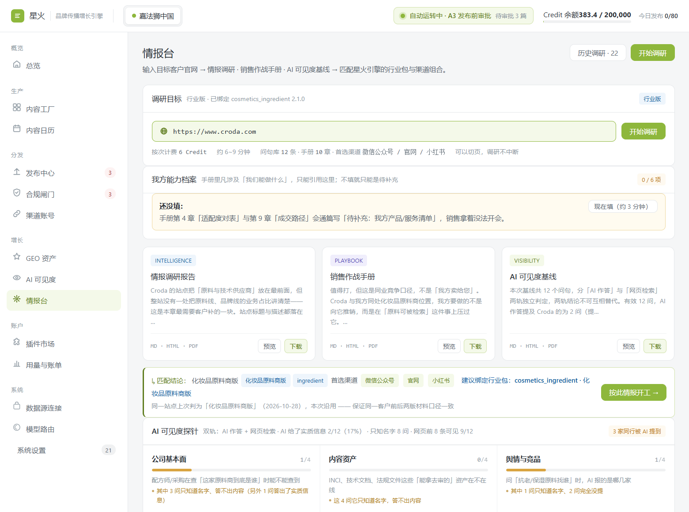
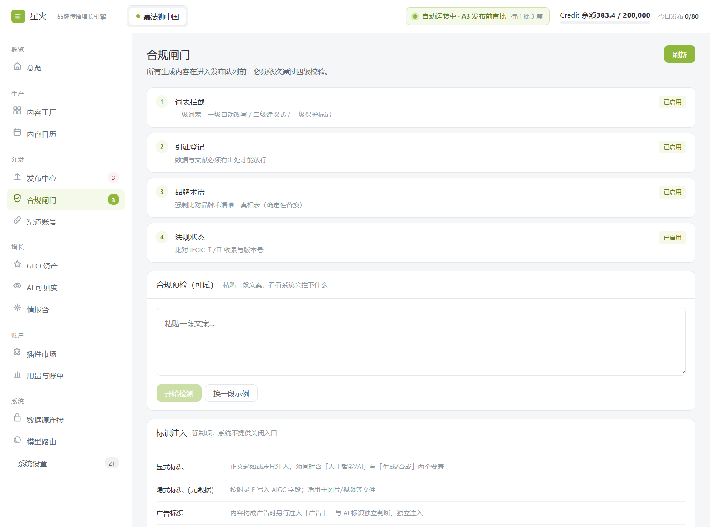
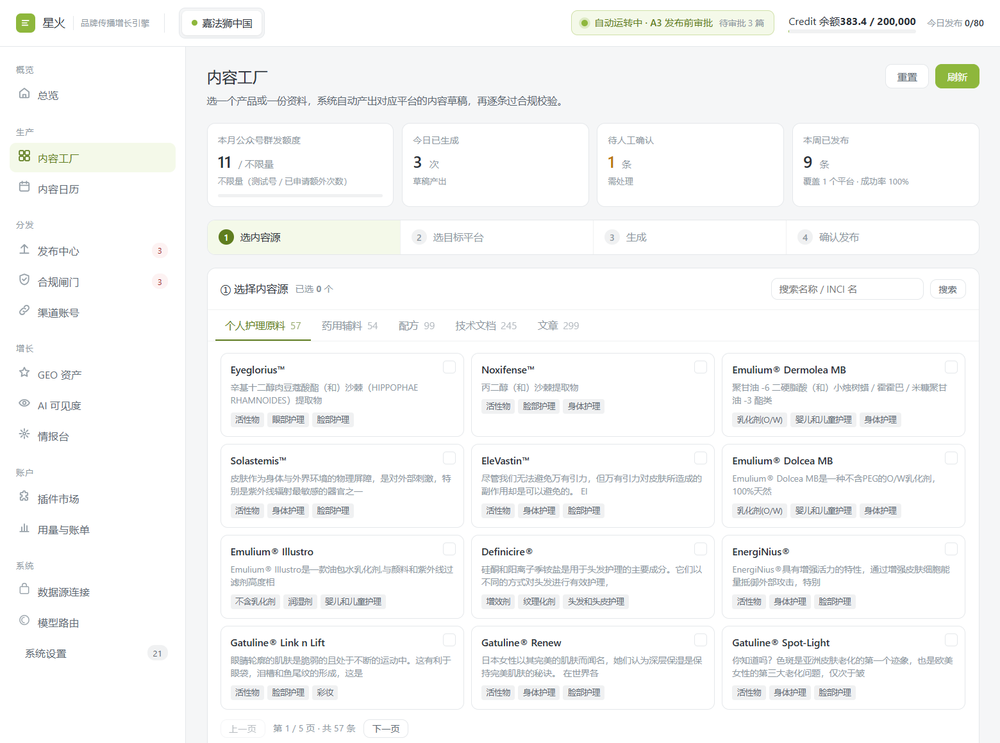
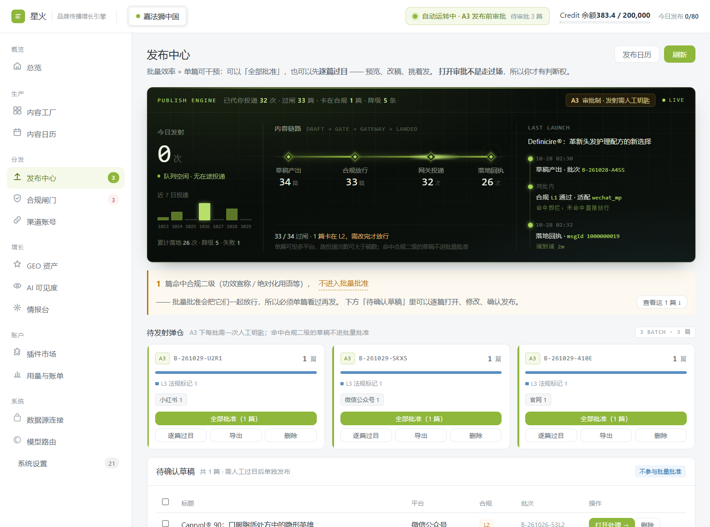

一次现场取证
你们已经证明了
「贵」能卖动。
接下来是让世界找得到。
东边野兽这五年做成了什么、现在卡在哪、下一个台阶从哪迈。
每个数字都标了出处 —— 你随手就能核。
这五年，你们把「贵」卖成了「值」
在国货集体做平替的那几年，你们选了最贵的一条路，而且卖动了。
到今天，也没几个国货品牌做成这件事。
同比 +358%
直逼国际大牌
全球 50 个值得关注品牌
五周年回顾展
出海第一站 · 2026.08
在别人降价的时候，你们没降
一瓶 30ml 卖 808 元，直接对标国际高端线。现在回看，这是国货里极少数站住的价格带。
成分不是故事，是供应链
灵芝、松茸、普洱 —— 一个成分一条产地。云南塔城的共益合作社、景德镇的回收陶瓷，都是真去过的地方。
文化先走出去
伦敦西区那间快闪店，同行里少数几个「不是去卖货、是去立认知」的品牌。
说白了：这些我们不是为了夸你才查的 —— 是为了判断下一个台阶该往哪迈。 因为能让你们再上一层的，已经不是再讲一遍东方草本了，那件事你们已经讲赢了。
三条，都跟「做得好不好」无关
这三条不是批评 —— 是这套打法本身到顶了。换谁在这个位置，都会撞上。
近八成生意在一个平台
天猫是你们的基本盘 —— 这句话是品牌方自己在双 11 采访里说的。稳，但也意味着天花板只有一个形状。
一个平台的天花板，就是全公司的天花板。
808 → 728 → 大促 315
官方价一路下探，双 11 到手价一度低到 315 元，个人店铺不到 350。高端定位是被促销一点点磨掉的。
价格越降，越难再讲「值」。
草种下了，线上没接住
伦敦那步是对的。但按何总自己的说法，那是「以可控成本完成海外试水、提前培育海外认知」—— 试水之后呢？
看过你的人回去一搜，找不到门。
所以不是你们慢了 —— 是这个池子整体不再涨水了。
说白了：前两条是「在国内多卖一点」，第三条是「换一个还在涨的池子」。 第三条你们已经动手了 —— 现在缺的只是，让海外那批人找得到、问得准、买得着。
AI 生态里，品牌只有三个位置
出海不是把货发出去，是让 AI 在回答里把你写进去。这三个位置买不到，也投不出来 —— 只能一层一层做上去。
机器抓得到你
Google 的 AI 概览、ChatGPT、Perplexity 去抓你的站，抓到的必须是机器读得懂的东西。
现状：入口三个，断了两个；活着的那个也读不懂。
所有来源说的是同一份事实
AI 不查档案，它每次都现编。你唯一能做的是让所有来源说同一套：英文名、成立时间、成分、功效。
现状：问了四遍，三个英文名，没有一个是你。
有第一手内容可引
AI 引用的是能被结构化拿出来用的东西：成分机理、检测数据、用法、对比。
现状：sitemap 里 47 个页面，零条结构化数据 —— 没有可被机器直接引用的一条。
说白了：第一层是修门，第二层是统一口径，第三层是备料。 三层做完，AI 才可能把你放进名单 —— 跳过任何一层，后面都白做。
两个打不开，只有第三个活着
这三个地址，都在公开信息里被当成「东边野兽官网」。2026-10-29 上午，我们逐个测了一遍。
| 域名 | 它出现在哪 | 实测结果 | 你自己怎么核 |
|---|---|---|---|
| herbeast.cn | 中文搜索结果第 1 位； 你们对外邮箱的后缀 |
DNS 查不到，打不开 | 手机 4G 打开这个地址 |
| herbeast.co/zh | 工商登记信息里写的 「企业官网」，带语言路径 |
连接失败，打不开 | 浏览器直接打开 |
| www.herbeast.world | LinkedIn 公司页的 官方站点地址 |
200，全英文站，活着 | 打开就知道 |
说白了：中文消费者按「官网」找过去，落点是空的；你真正在运营的站在另一个域名上，而且是纯英文。 这不是做错了 —— 这是出海企业的典型状态：国内站、国际站各搭一套，各走各的，对外身份没有收敛成一个。
人看得懂，机器读不懂
我们把 www.herbeast.world 的首页源码逐项看了一遍。三样最要紧的东西，是空的。
就一个词
<title>Herbeast</title>
没有「护肤」，没有「东方草本」，没有「上海」。
搜索和 AI 判断你是谁，第一眼看的就是这一行。
零条
ld+json = 0
机器没法结构化地知道：你是品牌、卖什么、成分是什么、多少钱。
AI 想引用你，没有可引用的骨头。
声明了大图，没配图
og:image = 缺
代码里写着「要大图卡片」，但没给图。
链接发到微信、发到 X，出来是一张空卡。
说白了：不是做得差，是只做了「给人看」的那一半。 人靠图和感觉就懂你；Google 和 AI 没有眼睛，它们只读标题、结构化数据、描述这三样。
它给了三个英文名，没有一个是 Herbeast
今天早上 8 点 42 分到 44 分，我们把「东边野兽是什么牌子？」原封不动问了四遍。下面四段全是原话，只把互相打架的地方标了出来。
- 英文名
- DONGBIAN YESHOU
- 成立
- 2020
- 成分
- 灵芝·松茸·青蒿
- 英文名
- （没提）
- 成立
- （没提）
- 成分
- 灵芝·松茸·石斛
- 英文名
- East Beast
- 成立
- 2021
- 成分
- 灵芝·松茸·青蒿
- 英文名
- East Beast
- 成立
- 2021
- 成分
- 灵芝·松茸·青刺果
没有一个是 Herbeast。
它不是记错了 —— 它压根没记住，每次都是当场现编一个像你的东西。
而海外买家问的，就是这些被现编出来的答案。
看见你的是第一步，接住你的是后三步
《伦敦合伙人》· 那本杂志
← 打不开
← 不是你的名字
或者，什么也没发生
第一步你们已经做对了。后三步本来是最省事的 ——
而现在，后三步全是断的。
所以不是「你的品牌不够响」，是响完之后没有接住的地方。
手机 4G 打开 herbeast.cn
看它是不是空的。别用公司 WiFi，用你自己的流量。
看 herbeast.world 的标签页
标题是不是只有 Herbeast 一个词。右键「查看源代码」，Ctrl+F 搜 ld+json。
问一次 ChatGPT 或 Perplexity
问 best Chinese herbal skincare brands。看名单里有没有你，或者有没有 East Beast。
缺口 → 补什么 → 谁来做 → 怎么验
你们现在要说服的不是消费者，是会议室里那几个人。所以每一项都拆成四格，谁问都能答上。
左边那个圈，是它属于第几层。
| 缺口 | 补什么 | 谁来做 | 补完怎么验 |
|---|---|---|---|
| ① 三个域名 | 收敛到一个主域，其余做 301 跳转 | 你们 IT + 我们出方案 |
三个旧地址都跳到同一个站 |
| ① 标题一个词 | 改成能读出业务的一句话（东方草本护肤 · 上海） | 我们出稿 你们上线 |
标签页一眼看出你做什么 |
| ①③ 零结构化数据 | 补品牌（Organization）+ 产品（Product）结构化数据 | 我们出代码 你们上线 |
源码搜 ld+json 有结果 |
| ① 分享无主图 | 补社交分享图 | 同一批 | 链接发微信有卡片图 |
| ② AI 说错英文名 | 英文名统一成 Herbeast，多来源交叉发布同一套说法 | 我们持续做 | 一个月后再问，名字对得上 |
说白了：这不是一次投放，是一次体检 + 修补。 每一项都能写进汇报、每一项都能被复查 —— 这是它和「讲完一个故事就等结果」最大的区别。
给我一个网址，
六分钟出三份东西
1输入一个网址（这个例子是给 Croda 做的），选行业包，点开始。6 个 Credit、6 到 9 分钟。
2出来三样：情报调研报告 / 销售作战手册 / AI 可见度基线。刚才那份体检，就是第三样里的第一段。
3「AI 可见度」两路查：一路问 AI，一路搜网页，两边结论分开写、不合成。
4「我这方能力」这个框要是空着，报告里就通篇写「待补充」。它不会替你编自己有什么本事。

粘一段你的稿子，
当场告诉你哪句会出事
1四道关按顺序过：词表 → 引证 → 品牌术语 → 法规状态。顺序固定，一次过完。
2词表分三级：一级自动改、二级拦住不许发、三级只标个记（INCI、浓度、pH 这类不是违规）。
3这个框现在就能试。你把上一篇推文粘进去 —— 不用信我说的。
4过了关的稿子，发出去会自动带一句「本文含 AI 生成内容」。这是法规要求，很多工具直接跳过这一步。

先挑料，再挑平台，
然后生成
1左上角四个数全是人话：还能群发几次、今天生成了几次、几条等你确认、本周发出去几条。没有一个「综合评分」。
2四步走：选料 → 选平台 → 生成 → 确认。每一步都能停下来改，不是点一下就跑完。
3左边这些是你自己的家底：57 个原料、54 个药用辅料、99 个配方、245 份技术文档。系统只从这里取材，不会去网上编。
4每张资产卡下面挂着标签：活性物、眼部护理、身体护理、彩妆。写稿时照着标签挑话，不会把眼霜的用法写到面霜上。

批了不算，落地才算
1四个数一路往下掉：34 篇写出来 → 33 篇过合规 → 32 篇投出去 → 26 篇真落地。掉的 8 篇就是没发成的。
2右边是最近一次真实投递：批次号、走的哪个平台、平台回执号。这个号能拿去后台核对。
3合规二级的稿子单独拎出来，不跟批次一起发 —— 一篇出事，不连坐其它 33 篇。
4这一类必须人点一下才能发。这个决定我们不替你做。

不是给你一个人做的孤本
同一个后台、同一份代码。唯一的区别是绑了哪份「说话手册」。
- 在用资产
- 960 条
- 内容源
- 57 个原料 + 54 个药用辅料
- 本月产出
- 58 条
- 本周已发
- 9 条 · 微信公众号
- 群发额度
- 本月还剩 11 次
- 说话手册
- 原料商版（面向配方师）
- 在用资产
- 0 条，从今天开始攒
- 内容源
- 灵芝系列 + 你的品牌素材
- 本月产出
- 等你的数据
- 本周已发
- —
- 群发额度
- 服务号 4 次 / 月
- 说话手册
- 品牌方版（面向消费者）
绑不同的手册，长出来的是两种东西：给原料商写的是配方语言（配伍、用量、INCI）， 给品牌方写的是消费者语言（脸红、刺痛、第二天早上）。同一套系统，换一份手册就换一种人说话。
三步，两周内能看到变化
第一层是三层里唯一「做完就放在那儿」的 —— 它不改你的产品，也不改你的定价，
只是让别人能找得到、看得懂。
把标签页改成一句话
现在只有一个 Herbeast。改成能读出业务的一句（东方草本护肤 · 上海）。改完，搜索和 AI 第一次知道你是干什么的。
补结构化数据
让机器能读出：你是品牌、有哪些产品、卖什么、什么成分。这是 AI 愿意引用你的前提 —— 也是被写进推荐名单的门票。
补分享主图
链接发出去不再是空卡。海外媒体、买手、代购第一眼看到的就是这张卡 —— 它现在是没有的。
我们做的是上游那一层 —— 让所有渠道抓到的关于你的信息，是同一份、准确的。
下游怎么打，那是你和代理商的事；我们只保证一件事：他们抓到的，是真的你。
说白了：这三步的价值不在「做了三个技术动作」，在于它能被验收 —— 两周后同一组问题再问一遍，名字对不对、站开不开、卡片有没有图，一眼就看出来。
下一个台阶，
从被找到开始。
这份体检留给你
三个域名、源码读到什么、每条怎么核，全写在里面。你拿去开会，谁问都能对得上。
两周后一起复测
同一组问题、同一套判据。名字对不对、还能不能被搜到，数字自己会说话 —— 不用听我说。
然后才谈怎么合作
先看到变化，再谈方式。顺序反了，对你们不公平。
是别人问起你的时候，那个答案里有你。
本页数据：2026-10-29 实测与公开报道，均标注出处
本机出口 IP 在国内，英文检索结果未采，已在页内说明